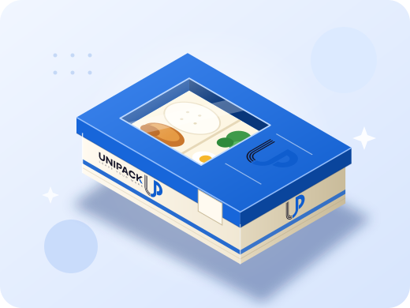

PACKAGING PARTNER · MALANG
Kemasan yang membawa identitas bisnismu.
Buat kesan yang lebih kuat lewat cup, paper cup, dan kemasan makanan dengan desain yang selaras dengan karakter brand-mu!
YOURS.

KEMASAN BUKAN SEKADAR WADAH
Setiap detail kemasan adalah kesempatan untuk membuat brand-mu lebih mudah diingat.
THE UNIPACK APPROACH
Lebih dari sekadar
kemasan.
Kami membantu kebutuhan kemasan bisnis kuliner dengan pilihan material dan ruang untuk menampilkan identitas visual brand.
Identitas brand
di setiap genggaman.
Hadirkan logo dan karakter visual usahamu pada kemasan yang digunakan pelanggan setiap hari.
Lihat pilihan cup ↗
Praktis untuk
setiap sajian.
Mulai dari minuman hingga makanan siap bawa, pilih bentuk kemasan yang sesuai dengan kebutuhan produkmu.
Temukan kemasan ↗
Detail kecil,
kesan yang besar.
Warna, logo, dan susunan desain yang konsisten membantu kemasan menjadi bagian dari pengalaman pelanggan.
Kenali pendekatan kami ↗
OUR PRODUCTS
Pilihan kemasan
untuk ide besarmu.
HOW IT WORKS
Dari ide sampai
siap digunakan.
Alur pemesanan dibuat bertahap agar kebutuhan produk dan desain dapat dikomunikasikan dengan jelas.
Mulai konsultasi ↗Pilih produk
Tentukan jenis dan ukuran kemasan sesuai kebutuhan usaha.
Konsultasi & kirim desain
Diskusikan spesifikasi, lalu kirim konsep desain yang ingin digunakan.
DP & persetujuan desain
Proses dilanjutkan setelah pembayaran awal dan desain disetujui.
Produksi
Produksi cup dimulai setelah desain mendapatkan persetujuan akhir.
LET'S BUILD YOUR BRAND EXPERIENCE